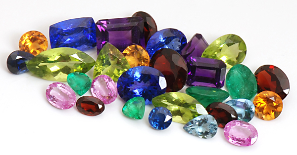
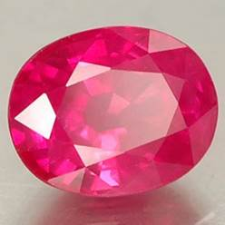
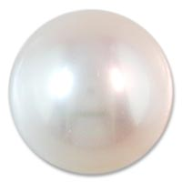
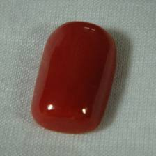
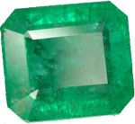
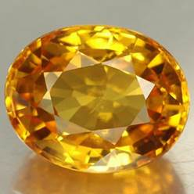
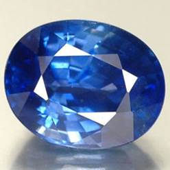
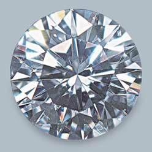
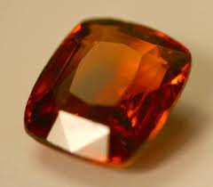
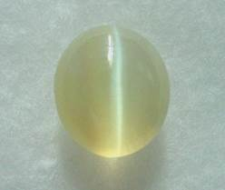

Gemstones (Ratna Therapy)

In the ancient Puranas, nine Vedic astrological gemstones have been clearly mentioned. Each of these gemstones represents one of the nine major planets:
- Ruby for the Sun
- Pearl for Moon
- Coral for Mars
- Emerald for Mercury
- Diamond for Venus
- Blue sapphire for Saturn
- Cat’s eye for the planet Ketu
- Garnet (hessonite) for the planet Rahu.
One may wonder what the importance of these nine gemstones are?
Well, just as all types of food are not suitable for all humans, not all gemstones are recommended to be worn by all humans. Out of these nine gemstones, only two or three gemstones may actually be suitable for each person based on the consistency of cosmic configuration within them. This cosmic configuration is broken down into the five basic elements:
- Fire (your body temperature)
- Water (the molecule that makes up 75% of your body)
- Air (the molecules that you breathe every second)
- Earth (your body’s minerals and vitamins)
- Cosmic energy (the Sun and other planets’ magnetic fields
Fusing the natural composition of the gemstones with that of your body will enhance your talents and diminish your weaknesses. Wearing the wrong gemstones could be the cause to much disruption and stagnation in your life. The technique required for finding the most beneficial gemstones requires establishing your nakshatra (birth ascendant) through calculations based on your date, time, and place of birth. With my empirical knowledge in Vedic astrology I will prescribe the most suitable and empowering gemstones.
With Vedic astrological gemstones, you are bound to experience true harmony and success. Remember, Nature will not come knocking on your door to help you. It is up to you to seek and harmonize yourself with Nature. Take advantage of this fantastic knowledge of ancient seers and find out what your harmonizing Vedic astrological gemstones are, today!
“Yat Pinde Tat Brahmande”- You are a Universe within the Universe
You are part of Nature. Use Nature’s own properties to balance yourself
RUBY-THE GEMSTONE OF SUN

Ruby righteously symbolizes passion and love. The ancient Hindus call this precious gem ‘Rajnapura’ which means ‘King of Gems’ being one of the most costly stone throughout history.
A magical power attributed to ruby is that of warding off evil spirits. Worn by the right owner, it can change its redness into a deeper darker hue whenever danger is approaching, and turns back to the original state when the danger is past. Ruby is a type of mineral which is a falls under the category of Corundum, the next hardest mineral following the diamond. It is formed as crystals which developed within the spaces of metamorphic rock. Needless to say, the bigger a ruby is, the more expensive it will cost because it rarely develops on big sizes. It can exude different color ranges from orangey red to those with a purplish red shade. The most preferred ruby is the one with a true red color. Excellent qualities of rubies can be found in the countries of Kenya, Australia, India, Pakistan and the United States. Ruby is distinguished and known by all for its fiery red color. Beside for its color, it is a most desirable gem due to its hardness, durability, luster, and rarity. Transparent rubies of large sizes are even rarer than diamonds. Transparent, flawless rubies exceed all other gems in value. (except for deeply colored “fancy diamonds”).Rubies must be transparent to possess gem value. Opaque or semi-opaque rubies have little value, even if they display asterism. Ruby is a red variety of the mineral corundum. Sapphire, the other gem variety of corundum, encompasses all colors of corundum aside from red. In essence, ruby is a red sapphire, since ruby and sapphire are identical in all properties except for color. The color of ruby ranges from bright red to dark reddish-brown. The most preferred color is a deep blood red with a slightly bluish hue. Such ruby is known as “Burmese Ruby” or “Pigeon’s Blood Ruby”. Ruby from Burma is famous for its exceptional coloring. However, Burmese ruby rarely exceeds several carats, large flawless Burmese rubies can be worth millions of dollars. Most rubies on the market are from Thailand, and these rubies have a brownish hue. They can be heat-treated to improve color. Heat-treating a ruby can also increase its transparency by removing tiny internal flaws.
Ruby is the gemstone of love. Astrologers say that ruby generates liveliness and spark in human nature. It casts away despair and gloominess of character. Ruby is effective in safeguarding a person from evil spirits. Ruby enhances financial stability and assures recognition in the society.
Wearing ruby can also fulfill a native’s desire of a son. According to astrological principles ruby fades or changes its color when inauspiciousness afflicts its native but it gradually gains its color after the bad phase. Ruby is so effective that it lessens the impact of poison and becomes pale when there is a poisonous thing nearby.
PEARL THE GEMSTONE OF MOON

Pearls have been treasured for their lustrous, creamy texture and subtle iridescent reflections since the dawn of humankind. According to ancient Chinese legend, the moon holds the power to create pearls, instilling them with its celestial glow and mystery.
Pearls are unique in the world of colored gemstones since they are the only gemstone formed within a living creature. Because natural pearls are so rare and difficult to recover from the ocean’s depths, man invented the technique of culturing salt and freshwater pearls from mollusks carefully seeded with irritants similar to those produced by nature. The painstaking effort of culturing is one of the most dramatic examples of man’s quest to coax beauty from nature.
Today, cultured pearls are grown and harvested in many parts of the world including the fresh waters of the Tennessee River. The majority of cultured pearls come from Japan, China and the South Pacific.
Cultured pearls come in many beautiful colors including: gold, yellow, champagne, pink, peach, lavender, gray and black. Cultured pearls come in many shapes and sizes, and can be acquired in both graduated and uniform strands. They can be purchased singly or in pairs for rings, pendants and earrings. June birthdays and third and thirtieth anniversaries are celebrated with the gift of pearls.
Astrological Effects of Pearls
Pearls are ruled by the Moon. They should be worn by those in whose birth chart the Moon is lord of an auspicious house, and when the lord of an auspicious house is afflicted and is not well placed in the birth chart. Pearls are used to strengthen a weak Moon, and can be worn if the Moon is well-placed in the birth chart.
Pearls strengthen the mind, increase memory, and help control anger. They have a calming and peaceful effect on the mind, and encourage feelings of compassion and love. They also help spiritual meditation.
Pearl brings wealth, sons, popularity, fortune, fame, and freedom from disease and grief. Hindu brides often wear pearl nose rings at their weddings in order to ensure happy marriages and to guard against widowhood.
Pearls can calm the nerves, free one from anxiety, lessen tension, and help with mental problems caused by too much heat in the brain and heart. Pearls are good for women in general. Pearls may also help improve such conditions as tuberculosis, heart disease, ulcers, fever, epilepsy, diabetes, insomnia, eye problems, and uterine problems. Women can wear pearls for menstrual problems.
RED CORAL THE GEMSTONE OF MARS

Red Coral is among the most ancient of gem materials, used for adornment since prehistoric times.
Coral is an organic gem, calcium carbonate with a trace of carotene, deposited by tiny sea creatures living in the depths of warm seas in huge colonies. It grows in branches that look like underwater trees. Most coral used in jewelry is found in the Mediterranean Sea or in the Pacific off Japan and Taiwan.
Coral was long thought to be a powerful talisman that could stop bleeding, protect from evil spirits, and ward off hurricanes. The ancient belief in the protective and invigorating powers of coral lives on in the traditional present of red coral necklaces for small children.
Coral is one of the seven treasures in Buddhist scriptures and Tibetan Lamas use coral rosaries.
Coral trees were once brought to the surface by means of drag nets. But today, the harvesters use more environmentally sound methods: deep-sea divers collect the branches by hand. In the next step, the pieces are cleaned, sorted, and sawed into pieces. Most coral is set into inlays, beads, carvings, or cabochon shapes.
Coral has an even color and has no fissures, spots, bands or cavities. Since untreated Coral is rare, it is valuable.
Special care is required for coral . A soft and porous gem, coral scratches and abrades easily and chlorine, alcohol, ammonia, nail polish remover, and other chemicals can damage it. Remove coral rings when washing and moisturizing your hands.
Avoid exposing your coral to extreme temperatures. It may gradually change color from everyday wear.
As an organic gem, coral is softer than other gem materials and should be stored away from other gemstones to prevent scratches. To clean coral, wipe it gently with a moist soft cloth.
Astrological Importance
Coral is believed to cure blood related diseases. Red coral is very helpful in making the wearer courageous. It is also believed to reduce the troubles caused due to wrong/harmful positions of Mars.
Coral is a lucky gem for all those who are born under number 9. Mars rules this number. People born on 9th, 18th, 27th of any month are governed by this number.
Coral is one of the five sacred stones of the Tibetans and the American Indians.
It represents the business of gold, steel, agriculture, weapons and property.
Police & defense services, chemical studies, surgery, dental treatments are the professions lead by Mars.
EMERALD THE GEMSTONE OF MERCURY

Emerald, the green variety of the mineral beryl, is the most famous and favored green gemstone. Its beautiful green color, combined with durability and rarity, make it one of the most valuable gemstones. Beryl also contains other, lesser known gem varieties, such as aquamarine and heliodor. Pure beryl is white; emerald’s green color is caused by chromium impurities (and occasionally by vanadium impurities).
Deep green is the most desired color in emeralds. The paler the color of the emerald, the lesser its value. Pale emeralds are not called emeralds, but “green beryl”. They are sometimes heat-treated, in which they become aquamarine.
Emeralds are notorious for their flaws. Flawless stones are very uncommon, and are noted for their great value. Some people actually prefer an emerald with very minute flaws over a flawless emerald, as this proves authenticity of the stone. Many emerald flaws can be hidden by treating the emeralds with oil. Newer, more effective fracture-filling techniques are also practiced. Irradiation of some emerald gems is somewhat effective in removing certain flaws.
A rare, prized form of emerald, found only in the Muzo mining district of Colombia, is a very unusual form of this gem. This emerald, known as “Trapiche emerald” is characterized by star-shaped rays that emanate from its center in a hexagonal pattern. These rays appear much like asterism, but, unlike asterism, they are not caused by light reflection from tiny parallel inclusions, but by black carbon impurities that happen to form in the same pattern. Emerald may develop internal cracks if banged hard or if subject to extreme temperature change.
Emeralds that were treated to mask internal flaws should never be cleaned with an ultrasonic jewelry cleaner, nor should they be washed with soap. These practices will remove the oil and expose the hidden internal flaws
YELLOW SAPPHIRE (PUKHRAJ) THE GEMSTONE OF JUPITER

Yellow Sapphire one of the safest stones, Yellow Sapphire is known to increase your financial status, empowering you with more ways of earning an extra buck to your otherwise routine paycheck. On the power of healing, this stone is famous for treating mild mental disorders, typically concentration deficiencies and improving your balance of mind. People in high profiled jobs and even politicians are not far behind when it comes to adorning these either in the form of rings or pendants.
Yellow Sapphire though flexible in its effects needs to necessarily be worn only on the right hand index finger. It is known to provide the wearer with enormous wealth, good health, fame, name, honour and success.
Yellow Sapphire represents the planet Jupiter. And Jupiter is known to be the largest planet that has its comparison with Saturn. Because of the magnanimity of its size, Jupiter belongs to the category of excesses. It is also known to empower one with the capacity of single handedly being the master of the one’s desires. It is also said that if you seek to sort all marital problems, then Yellow Sapphire is the solution for you.
The colour yellow brings in a sense of learning and warmth. It is no wonder that people wearing the yellow sapphire are attracted towards knowledge. Happily married couples also give credit to the Yellow Sapphire for its presence in their lives.
They seem to do great deal of good to other in particular. Sagittarius and Aries are two of these signs that wear Yellow sapphire, and it is highly recommended for Aquarians and, Leo’s and Gemini’s to also wear this for added benefits.
Yellow Sapphire is also well known for its effects for stomach ailments. If you are one who constantly suffers either from gastric ailments or those related to morning sickness, then yellow sapphire is the stone for you.
Effects of Yellow Sapphire
Yellow sapphire harmonizes and benefits Jupiter, the largest planet in the solar system. Its effects are more like the sun, in the solar system, and quite unlike it too. Like the sun, this stone spreads across warmth, knowledge and tranquility but unlike the sun, the yellow sapphire is known to bring in mental peace and this stone is therefore recommended for Leo’s to wear as this brings equilibrium to their hot temperaments.
Significance
Yellow sapphire signifies knowledge, wisdom, virtue, fortune, justice, education, future, religion, philosophy, devotion, children, distant travel, spirituality, truthfulness, prosperity and charity. It acts as a ‘Guru’ is the major instructor or teacher and influences action with the highest order and balance. The Guru guides action in the most harmonious and uplifting
manner and balances inner and outer input while simultaneously performing and monitoring action. And if it does not suit you, it never does harm you either, so if you think you want to experiment and take a feel of the stone, then you must go for it.
BLUE SAPPHIRE (NEELAM) THE GEMSTONE OF SATURN

Stones and Gems have magnetic powers. Blue Sapphire is the gemstone bearer of the blue color ray. Its effects are a combination of those of the blue ray and of the energy of Sapphire’s mineral composition, corundum. Blue Sapphire nourishes the mind and puts thoughts in order and perspective. The blue ray it carries disintegrates disharmony in the physical head, thereby clearing the pathways for healing energies to enliven all the functions centered there.
Blue Sapphire can help you gain self-mastery that is, mastery of your mind, emotions, and physical body. To understand how Blue Sapphire does this, it is necessary to understand something of the nature of the mind. The mind is complex and comprised of many levels or areas. Thoughts are formed at the highest level of the mind, in the aspect closest to your purely spiritual aspect. They are generated continually; indeed, a new thought is born every moment. As Soul, you have the power to discriminate and choose which thoughts you wish to have. This is an important choice, because your thoughts feed and otherwise profoundly affect your emotions and physical body.
Consequently, learning mental discrimination is essential. This discrimination is the ability to choose which thoughts you would like to entertain, express, and empower. It is also the ability to choose which thoughts you would like to ignore and allow to flow out into the ethers so that they never manifest or affect anything. Blue Sapphire can teach mental discrimination.
It is an expensive stone. But one should wear it after consulting a therapist, astrologer and numerologist. It gives relief to heart patients and protects the wearer against accidents and dangers of fire and natural calamities. It removes hassles and irritants, agonies and frustration in life. Sapphires are placed in different categories. The Brahmin class is blue or white with a bluish hue. The kshatriya class is raddish with bluish hue. The Vaishya class is white with dark blue tinge. The shudra class is blue with a blackish hue. A blemished Sapphire brings in trouble. If it is having white lines, it affects wearer’s eyes. Milky hue causes poverty. Cracks in stone may cause accidents and a double colored one may bring in enmity. Non-transparent may affect the wearer’s near relations. If sapphire changes its color, it warns the wearer of a treat of attack to him/her or a conspirary against him/her. It has been noticed that the stone comes back to its original color after the calamity is avoided or passed.
There is a substitute for Blue sapphire and that cheaper stone is called Kathela. It can be worn when there is a conjunction of Saturn-mars or Saturn-rahu in the birth chart. It should be 3 to 3.5 carats in weight for domestic peace and financial prosperity. It helps in preventing vomiting, nausea, headache, vertigo, abscess, eye infections, allergies and tensions. The wearers of the stone would be attached and faithful to his/her family members.
This stone should be worn on Saturday two hours and forty minutes before sunset. It can be also worn during pashya nakshatra or eclipses after distributing alms to the poor and doing puja. Expert’s opion that Blue Sapphire should be worn on the second finger and the weight should be atleast 5 carat. To achieve improvement in fertility, Blue sapphire can be combined with Tourmaline of green color.
“one spoon of sugar can boost an average person’s energy level. That same spoon of sugar can be life threatening for a person with diabetes”.
DIAMOND THE GEMSTONE OF VENUS

Diamonds are the hardest substance on earth. They are four times harder than rubies and sapphires, the next hardest mineral. Diamonds can be cut because they possess cleavages. A diamond’s cleavage is perfect in four directions, making it an octahedron. Diamonds have the highest refractive index of any gem. They also have one of the highest dispersions of any colorless stone; it is this dispersion that gives them the play of color known as “fire.”
Diamonds are 3.5 times as heavy as water, making them one of the heaviest minerals. Their optic character is singly refractive, and their crystal system is cubic. Diamonds are composed of crystallized carbon, like graphite the soft mineral used in pencils. What makes the difference between the two is how they bond chemically the chemical bonding in diamonds is strong, in graphite, weak.
Diamonds are mostly found in Australia, South Africa, Zaire, Botswana, and Russia. About ninety percent of the diamonds on the market come from one of these five places. Australia and Zaire are the biggest producers, but only about five percent of the diamonds mined in these places are of gem quality.
The expensive pink diamonds are mined in Australia. South Africa was once first in world diamond production. About half the gems mined in Botswana are gem quality. India and other parts of Asia were once major diamond producers, but they no longer rank among the world’s larger producers.
Asia is an important center for cutting and polishing diamonds. Many gems are processed in Thailand and Hong Kong, although other places in China are also becoming popular.
Diamonds can be white, yellow, red, pink, black, green, blue, purple, or a rosy color. Colorless diamonds are usually considered the best, unlike with other gems. The color in a diamond is caused by tiny amounts of nitrogen (mostly yellows) or boron (blues) in the mineral deposit that becomes a diamond. The diamonds generally used to make jewelry are both colorless and flawless. The clearest, whitest diamonds are considered most valuable, but less than one percent of all diamonds mined are this color. Blue-white stones are also highly regarded. Most diamonds have a yellow or brown tint to them, which is usually not considered good.
Color and clarity are considered more important than weight when considering a diamond’s value. Flawless diamonds with stronger colors are known as “fancy diamonds,” and are sometimes more valuable, because it is rare to find a flawless diamond of certain colors. The bright red ones are the most expensive.
It is important to note that diamonds color enhanced by irradiation or heat treatments should be marked as such and should not be used for astrological remedies. To ascertain a diamond’s color, look through its side against a white background; artificial light can mask a diamond’s true color, so always examine a diamond in sunlight. A good quality diamond is ascertained by
its hardness.no other gem or metal should be able to scratch it.
Diamonds both reflect and refract light from their facets.
The bright luster of a diamond is caused by light reflecting from its hard crystal faces or facets. A facet is a flat, polished face. The average diamond has 58 facets. Luster is increased by light within the diamond because of strong refraction, which causes internal reflections.
A Diamond is considered flawless if no inclusions are visible though a lens or loupe with 10x magnification. A Diamond is considered to have flaws if it possesses dots or droplet-shaped impressions.
If a jeweler vaporizes inclusions with a laser, or files a fissure to make them less visible it has to be disclosed to the buyer. These processes usually make a diamond unsuitable for use in astrological remedies.
HESSONITE THE GEMSTONE OF RAHU

The gemstone that is transparent, of fine and good colour, soft in touch and gives luster and radiance, is considered a stone of good quality and auspicious gomedha. The gemstone having a light blackish hue, without radiance, rough, flat, full of layers and which looks like a yellow piece of glass, is a stone of average quality and is not considered auspicious. Wearing of an unblemished Gomedha ensures the native safety and protection from deadliest of enemies. Gomedha bestows health, wealth and prosperity to its owner. A blemished gemstone is harmful for the wearer. The red coloured gomedha is injurious to health and one having a mixture of mica is destroyer of wealth.
Who Should Wear Gomedha?
Rahu and Ketu are shadowy nodes and do not own any signs in the zodiac. Rahu and ketu give the results of the lords of the bhavas or houses they occupy. Therefore, if Rahu and Ketu occupy a bhava (house), the lord of which is an auspicious planet in a birth chart and is well placed in it, Rahu and Ketu will give better results of that particular planet. In such circumstances it will be beneficial for the native to wear a Gomedha for Rahu or Cat’s eye for Ketu in their major and sub-periods.
CATS EYE THE GEMSTONE OF KETU

Cat’s Eye harmonizes Ketu which is traditionally known as the “tail of the dragon”. In Jyotish, Ketu is the descending node of Chandra (Moon). It’s influences are similar to Mangal or Mars and include liberation, abstract thinking, asceticism, non-attachment, healing, moksha–enlightenment, wisdom and that which is hidden. Ketu’s influence in the physiology is represented by the tail of the caudate. It’s influence is over learning and emotions. It’s wearing removes physical weakness. Mental worries are removed. If cat’s eye acts favorably, it makes one a wealthy person.